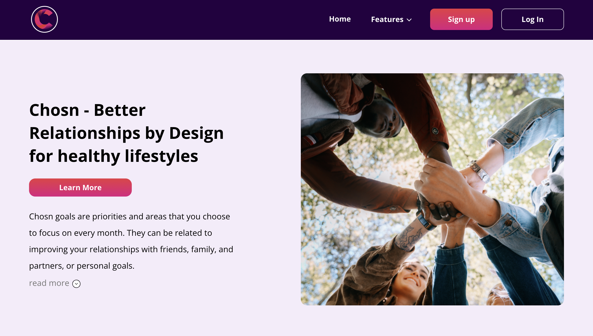
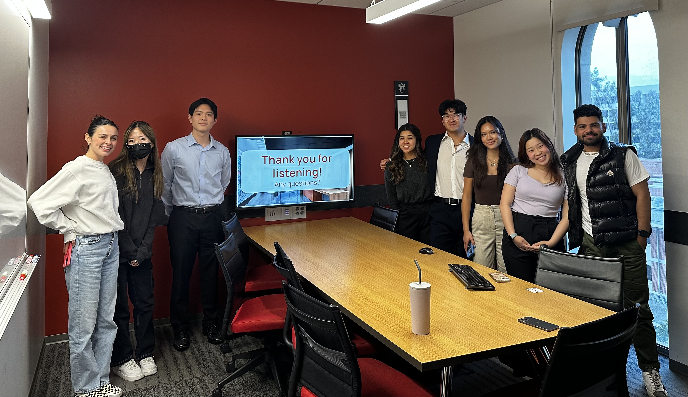
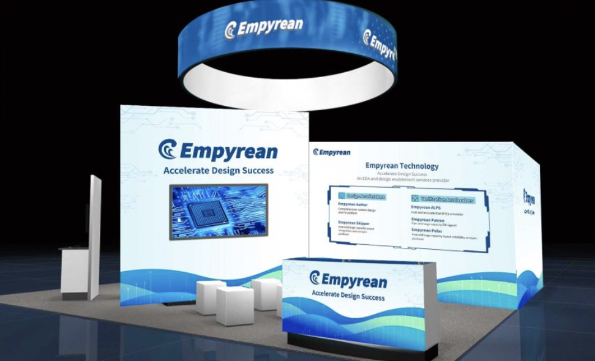
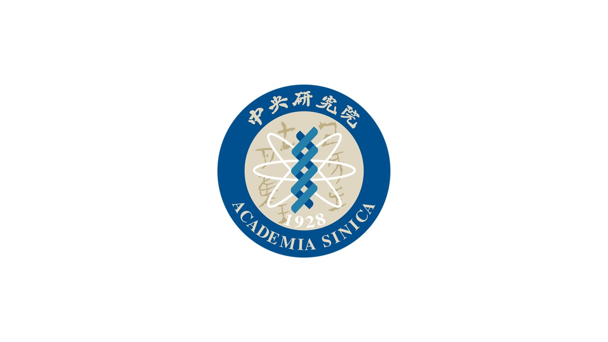

1 / 4

Chosn Relationships
August 2022 - December 2022
Product Management Intern
At Chosn Relationships, I maintained effective communication among cross-functional teams and collaborated with the CEO to align our team goals.
In addition, I contributed to the full-stack development of our web application utilizing JS, React.js, Node.js, and AWS.
2 / 4

USC techie
August 2021 - Present
Head Project Manager
As a project manager at techie, I led teams of 4-5 project analysts to implement the new Client Services Project.
As college students, we provided insightful pro-bono consulting and delivered impactful presentations to stakeholders.
Starting Fall 2023, I have been promoted to techie president.
3 / 4

Empyrean Technology
May 2023 - Present
Software Engineer Intern
As a SWE intern at a global semiconductor company, I made significant contributions to the Research & Development program.
I played a key role in enhancing software reliability and improving user experience by detecting and resolving memory leaks within our products.
4 / 4

Academia Sinica
Summer 2023
Product Management Intern
I will be interning abroad at the most prominent research facility in Taiwan.
As a ML intern, I will work on solving efficacy prediction related to RNA by
analyzing data and constructing various machine learning models.
❮
❯